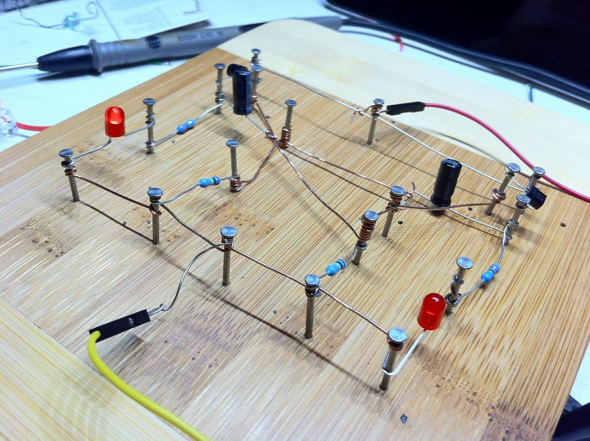

Een overzicht van wat je nodig hebt voor dit vak: welke hardware je aanschaft, en welke software je installeert om je Arduino te programmeren.
In je kit zit een breadboard, wit met rijen gaten waarop je je schakelingen bouwt. De eerste radiobouwers hadden zoiets nog niet: die sloegen spijkers in een houten broodplank en wikkelden hun draden daaromheen. Rond 1970 kwam de plastic versie op de markt waar je de draden gewoon in steekt, en de naam ging mee. Welke gaten van dat breadboard onderling doorverbonden zijn, staat op Het breadboard.
